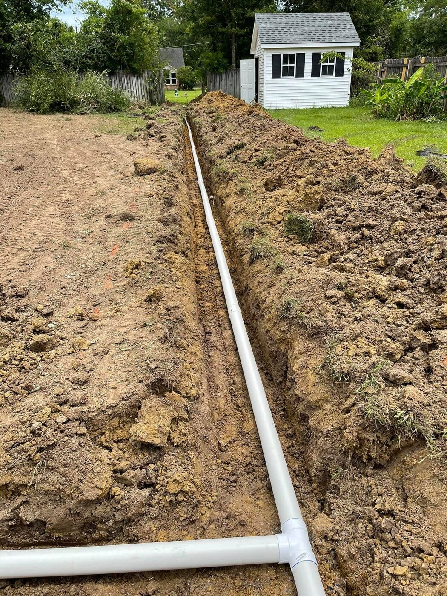
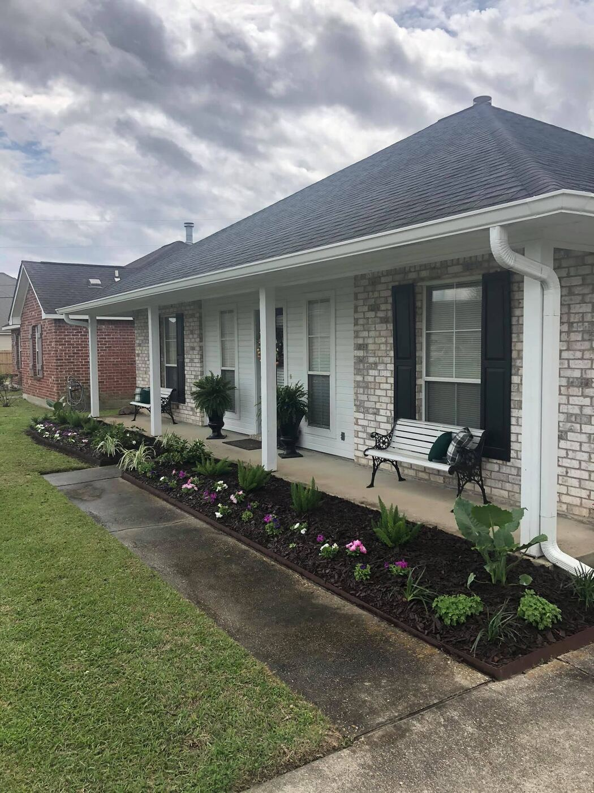
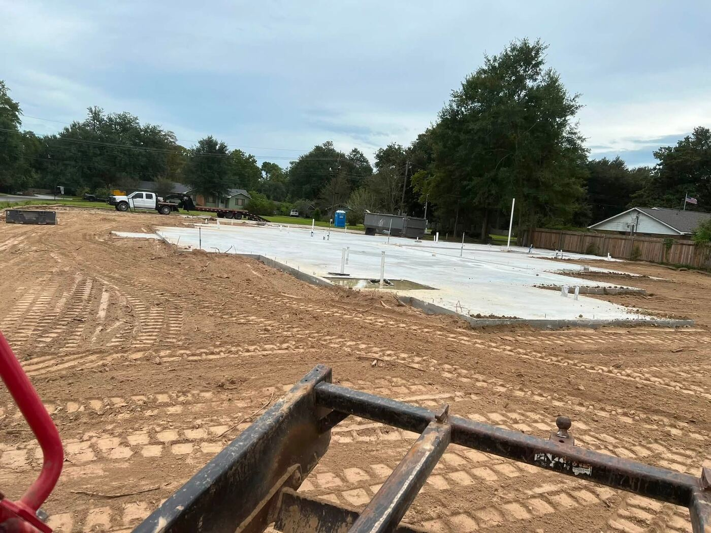

Services / Irrigation
Sprinkler installs, drip lines, seasonal adjustments, and repairs for residential and commercial properties across Ascension and Livingston Parishes.
Residential
We run new zone and drip lines for beds, lawns, and sod that need consistent watering, and we troubleshoot systems that are already in the ground, broken heads, bad valves, coverage gaps that leave brown patches.
Every install is trenched and tied in cleanly, not just run across the surface and covered over.



Commercial
We handle start-up and shutdown around the freeze/thaw cycle, seasonal runtime adjustments as watering needs change, and repairs that get scheduled fast so a property doesn't sit on a broken zone.
What's Included
Zone and drip systems trenched, tied in, and tested before we leave.
Broken heads, bad valves, leaks, and coverage gaps fixed fast.
Start-up, shutdown, and runtime adjustments through the year.
Tell us what the property needs and where it is.